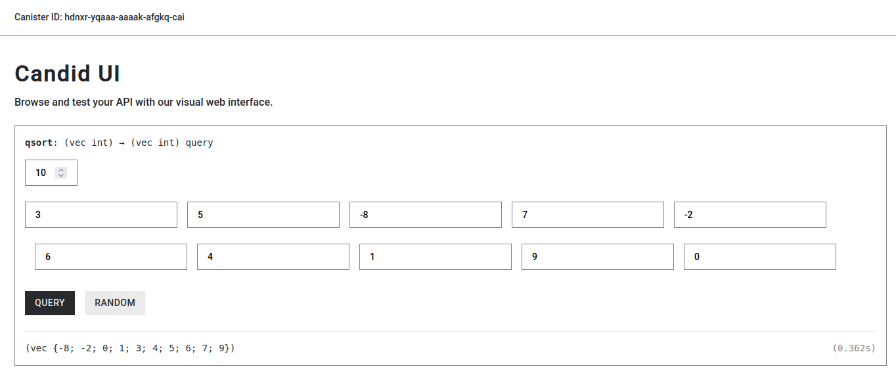

actor {
func quicksort(arr:[var Int], low:Nat, high:Nat) {
var m = low + 1;
var state = 0;
var space : Nat = low;
var i = low + 1;
var j = high;
var temp = arr[space];
while(m <= high) {
if (state == 0) {
if(arr[space] > arr[j]) {
arr[space] := arr[j];
arr[j] := temp;
space := j;
state := 1;
};
if(j > i) {
j := j - 1;
}
} else if (state == 1) {
if(arr[space] < arr[i]) {
arr[space] := arr[i];
arr[i] := temp;
space := i;
state := 0;
};
if(i < j) {
i := i + 1;
}
};
if (i == j) {
if((space > i and arr[i] > arr[space]) or (space < i and arr[i] < arr[space])) {
arr[space] := arr[i];
arr[i] := temp;
space := i;
};
if(space == 0) {
return;
};
if (space - 1 > low) {
quicksort(arr, low, space - 1);
};
if (high > (space + 1)){
quicksort(arr, space + 1, high);
};
};
m += 1;
}
};
public query func qsort(arr: [Int]): async [Int] {
var newArr : [var Int] = Array.thaw(arr);
quicksort(newArr, 0, newArr.size() - 1);
return Array.freeze(newArr);
}
};
根据老师提供的Candid UI：https://a4gq6-oaaaa-aaaab-qaa4q-cai.raw.ic0.app
Canister ID: hdnxr-yqaaa-aaaak-afgkq-cai
生成的连接地址为：https://a4gq6-oaaaa-aaaab-qaa4q-cai.raw.ic0.app/?id=hdnxr-yqaaa-aaaak-afgkq-cai
